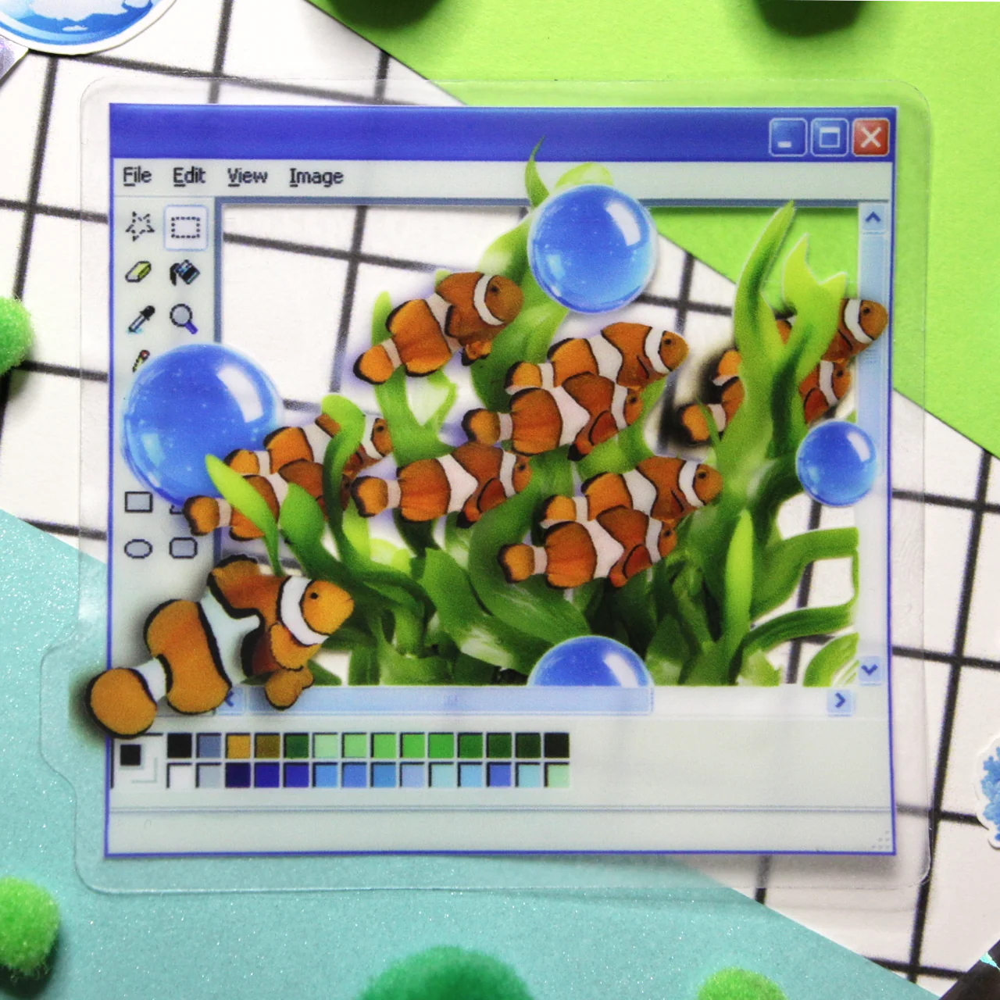

Donde esta el veranillo de San Miguel

A finales de septiembre o principios de octubre, después del verano y antes del otoño.

"El verano de san miguel faltara muy rara vez."
Es lo que afirma uno de los refranes mas populares en España.
El veranillo de San Miguel es un fenómeno meteorológico que se produce en España y en algunas regiones de América Latina, caracterizado por un período de tiempo cálido y soleado que ocurre a finales de septiembre o principios de octubre, después del verano y antes del otoño.
Durante este período, las temperaturas pueden subir significativamente, y se experimenta un clima agradable y soleado, similar al del verano. Este fenómeno es especialmente notable en España, donde se asocia con la festividad de San Miguel, que se celebra el 29 de septiembre.
El veranillo de San Miguel es un fenómeno que puede variar en duración y intensidad de un año a otro, y no ocurre todos los años. Sin embargo, cuando se produce, es una oportunidad para disfrutar de actividades al aire libre y aprovechar el buen tiempo antes de la llegada del otoño que se acerca.
Estes veranillos se producen por
la presencia de una masa de aire cálido y estable que se desplaza desde el sur hacia el norte
REFRANES ALUSIVOS A LAS ESTACIONES DEL AÑO
